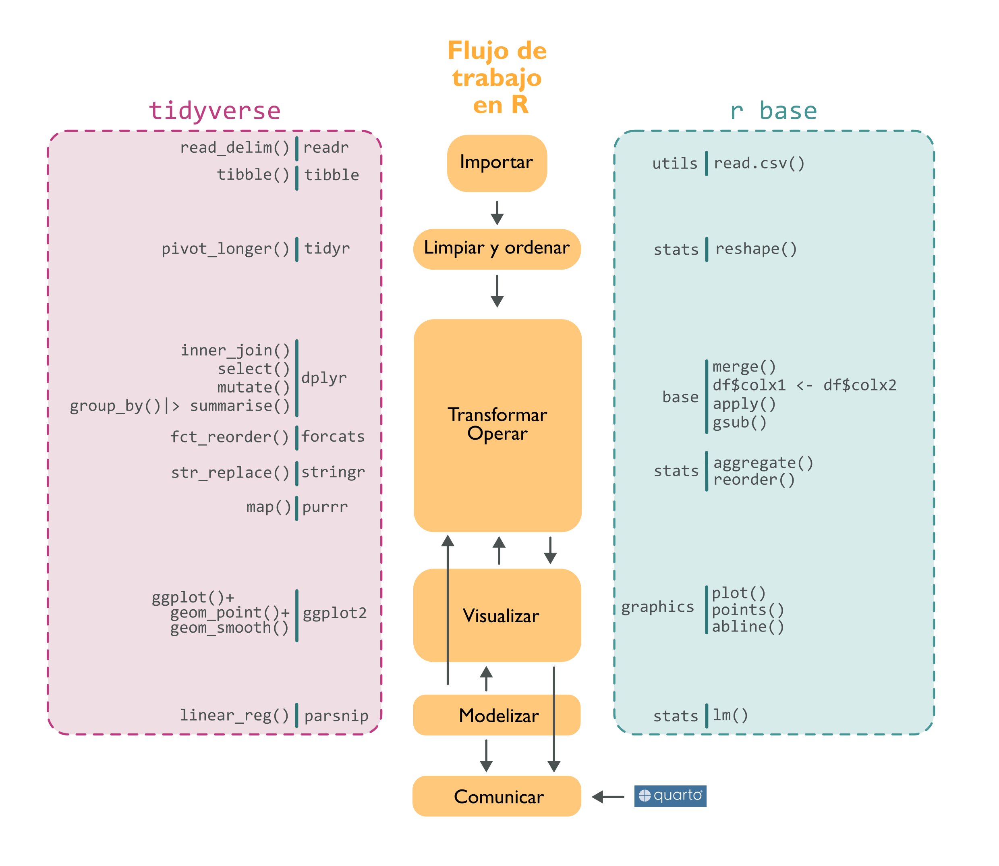

getwd() # saber directorio de trabajo
setwd("C:/Users/veruk/Desktop/Disco/curso_ciencia_datos") # ojo con la ruta / o \\Ciencia de datos en R 
Introducción (Organizando datos: el día a día)
1 Quiénes somos
Verónica Cruz-Alonso (veronica.cral@gmail.com) y Julen Astigarraga (julenastigarraga@gmail.com). Coordinamos el grupo de trabajo de Ecoinformática de la Asociación Española de Ecología Terrestre. En DatSciR publicamos los materiales de los cursos que impartimos.
Y vosotros ¿quiénes sois?
https://www.menti.com/alpvk2yr4cao
¿Y qué es R y de dónde procede?
R es un lenguaje y un entorno para la computación estadística y gráfica
2 Presentación
En este curso exploraremos tanto los fundamentos teóricos como las aplicaciones prácticas de la ciencia de datos en R. Abordaremos desde tareas comunes con las que nos enfrentamos en nuestro día a día, como la limpieza y transformación de datos, hasta nociones más avanzadas de visualización y programación. Además, aprenderemos a utilizar herramientas para generar documentos reproducibles y colaborativos. Durante el curso, combinaremos la teoría con la práctica, adaptando las lecciones a los problemas específicos de cada asistente, los cuales irán evolucionando día a día.
El objetivo principal es que tanto aquellos con conocimientos básicos en ciencia de datos como aquellos con un nivel más avanzado puedan beneficiarse y llevar consigo nuevos aprendizajes al finalizar el curso.

3 Estructura del curso
| Bloques | Contenido |
|---|---|
| Organizar datos: el día a día | Introducción a la programación en R Tidyverse Importar, filtrar, seleccionar, transformar, unir y exportar datos |
| Visualización: contando historias | Fundamentos de visualización Bases: gráficos por capas Visualización avanzada Introducción a la creación de mapas |
| Programación: aprendiendo a programar con funciones | Funciones Estilo de código Iteraciones Programación funcional |
| Comunicación: generando documentos reproducibles | Introducción a R Markdown Introducción a Quarto R Markdown vs Quarto Trabajos reproducibles |
| Colaboración: trabajando en equipo | Introducción a Git Introducción a GitHub Flujo de trabajo en Git y GitHub Trabajos colaborativos |
4 Dinámica del curso
Cada día combinaremos teoría con ejercicios. Idealmente, el cuarto y quinto día tendremos tiempo para que cada uno trabaje con sus propios datos. Todos los apuntes y ejercicios resueltos estarán disponibles en el repositorio de GitHub del curso. Si alguien tiene alguna duda o sugerencia, nos puede contactar por correo electrónico o publicarlo en las discusiones del repositorio de GitHub ¡así aprenderemos entre todos! 😉

5 Objetivos del día 1
Aprender conceptos básicos de la programación en R.
Aprender funciones básicas que nos permitan importar, explorar, limpiar, transformar y manejar datos.
Aprender estilos de código que facilitan su comprensión (📝)
6 Conceptos básicos
R: lenguaje de programación dinámico (se interpreta el código en el momento que se ejecuta).
RStudio: entorno de desarrollo integrado para programar en R. Tiene cuatro zonas diferenciadas: el editor de código, la consola (donde se ejecuta el código), el navegador del espacio de trabajo (con el entorno –environment- y el historial de comandos) y el mix de abajo a la derecha (Archivos, Gráficos, Paquetes, Ayuda).
Objetos: cualquier elemento almacenado con un nombre específico. Pueden ser de muchos tipos:
numeric,integer,logical,data.frame,SpatVector, etc.Funciones: objetos de R que toman un vector de entrada y dan como resultado otro vector haciendo una acción concreta (funcionalidad específica). Son los bloques de construcción fundamentales en cualquier script de R que es un lenguaje funcional.

Para comprender la computación en R, resultan útiles dos lemas:
- Todo lo que existe es un objeto.
- Todo lo que sucede es una llamada a función.
— John Chambers (Advanced R)
Paquetes o librerias: contienen funciones reutilizables, documentación sobre cómo usarlas y datos de ejemplo. Son las unidades fundamentales de código reproducible en R.
CRAN: the Comprehensive R Archive Network.
7 Comenzando a trabajar en R
7.1 El espacio de trabajo
El directorio de trabajo es la carpeta de nuestro ordenador donde estamos trabajando.
No es recomendable establecer el directorio de trabajo manualmente porque el trabajo deja de ser reproducible. Es mejor crear desde el principio un proyecto en R ligado a un directorio relativo que contenga todos los datos de entrada, los scripts y los resultados del script. Al abrir el proyecto, se sincroniza con pestaña Files.
💡Para crear un proyecto: Archivo > Nuevo proyecto
7.1.1 Ejercicio
Crea un proyecto para el curso de de ciencia de datos
7.2 Instalar y cargar paquetes
💡Para ejecutar un comando: Ctrl + Enter (Ctrl + R)
# install.packages("tidyverse", dep = T) # dep = T significa instalar dependencias
library(tidyverse)Warning: package 'ggplot2' was built under R version 4.3.3Warning: package 'tidyr' was built under R version 4.3.3Warning: package 'readr' was built under R version 4.3.2Warning: package 'purrr' was built under R version 4.3.2Warning: package 'dplyr' was built under R version 4.3.2Warning: package 'stringr' was built under R version 4.3.2Warning: package 'lubridate' was built under R version 4.3.2── Attaching core tidyverse packages ──────────────────────── tidyverse 2.0.0 ──
✔ dplyr 1.1.4 ✔ readr 2.1.5
✔ forcats 1.0.0 ✔ stringr 1.5.1
✔ ggplot2 3.5.0 ✔ tibble 3.2.1
✔ lubridate 1.9.3 ✔ tidyr 1.3.1
✔ purrr 1.0.2
── Conflicts ────────────────────────────────────────── tidyverse_conflicts() ──
✖ dplyr::filter() masks stats::filter()
✖ dplyr::lag() masks stats::lag()
ℹ Use the conflicted package (<http://conflicted.r-lib.org/>) to force all conflicts to become errors?tidyversestarting httpd help server ... done?select7.3 Operaciones aritméticas (R como calculadora)
5 + 6[1] 115 * 6[1] 3060 / 4[1] 155 + 4 - 2[1] 75 + 4 * 5[1] 25(5 + 4) * 5[1] 45log(10) # logaritmo neperiano [1] 2.302585log10(10) [1] 1exp(1) [1] 2.7182823 ^ 2 [1] 93 ^ 2 / 3 [1] 3sqrt(16) [1] 4pi [1] 3.141593sin(pi / 2) # en radianes [1] 1cos(pi / 2)[1] 6.123032e-17tan(pi / 2)[1] 1.633124e+16asin(1) * 2[1] 3.141593acos(1)[1] 08 Objetos de R
8.1 Nombramiento de objetos
Al asignar un nombre a un objeto podemos llamarlos siempre que necesitemos a lo largo del script. No es necesario guardar (exportar) la mayoría de los objetos que tenemos en el entorno de trabajo de R a nuestro ordenador, lo importante es conservar el script con el que se generan.
x <- 4.5 # shortcut para la flecha de asignación Alt + "-"
y <- "objeto" # si el objeto contiene letras, usar comillas
class(x) # función para ver de que clase es nuestro objeto [1] "numeric"class(y) [1] "character"x # Llamar al vector para saber su valor [1] 4.5y[1] "objeto"📝Los nombre de los objetos deben ser descriptivos y no pueden contener símbolos especiales (^, !, $, @, +, -, /, *).
📝R es sensible a las mayúsculas. Mejor no usarlas.
8.2 Tipos de objetos
8.2.1 Vectores
Un vector es la estructura de datos más sencilla en R. Un vector es una colección de uno o más datos del mismo tipo.
v1 <- c(2.4, 4, 6, 3.2) # si quiero asignar mas de un valor uso "c" (concatenar)
v1 [1] 2.4 4.0 6.0 3.2v1 * 100 # puedo operar con los vectores [1] 240 400 600 320log(v1)[1] 0.8754687 1.3862944 1.7917595 1.1631508v2 <- c(1, 3, 4, 8) # pero también entre vectores
v1 + v2[1] 3.4 7.0 10.0 11.2v3 <- v1 - v2
v3[1] 1.4 1.0 2.0 -4.8mean(x = v2) # funciones ya programadas [1] 4# ?mean # ayuda de funciones
sd(v2) [1] 2.94392length(v2) # n vector [1] 4max(v2) [1] 8min(v2)[1] 1# funciones que facilitan la creación de vectores
rep(x = 1, times = 4) [1] 1 1 1 11:10 # dos puntos de a a b [1] 1 2 3 4 5 6 7 8 9 10seq(from = 1, to = 20, by = 2) [1] 1 3 5 7 9 11 13 15 17 19c(v1, v2) [1] 2.4 4.0 6.0 3.2 1.0 3.0 4.0 8.0c(v1, rep(0, 3), v1) [1] 2.4 4.0 6.0 3.2 0.0 0.0 0.0 2.4 4.0 6.0 3.28.2.2 Ejercicio
Elije un número y multiplicalo por 3
Crea un objeto que contenga 100 valores entre 1900 y 2000
Suma un número a tu objeto
Multiplica tu objeto por sí mismo
Crea un único objeto que contenga el número 5 repetido 9 veces junto con una secuencia de 5 a 50 cada 5 elementos
¿Cuál es la longitud del objeto anterior?
Para crear vectores se pueden usar otras estrategias como las que tenéis recogidas a continuación.
rep(x = 1, times = 4) [1] 1 1 1 1rep(1:4, times = 2) [1] 1 2 3 4 1 2 3 4rep(1:4, each = 2) [1] 1 1 2 2 3 3 4 4rep(1:4, times = 1:4) [1] 1 2 2 3 3 3 4 4 4 4rep(x = c("gato", "perro", "pez"), times = c(5, 3, 1))[1] "gato" "gato" "gato" "gato" "gato" "perro" "perro" "perro" "pez" rnorm(10, mean = 4, sd = 2.2) [1] 5.9796302 4.8531205 3.8283849 2.0831124 5.3412602 2.2370961 4.1312356
[8] 0.4147123 3.4507827 4.53748318.2.3 Matrices
Las matrices pueden ser descritas como vectores multidimensionales. Al igual que un vector, únicamente pueden contener datos de un sólo tipo, pero además de largo, tienen más dimensiones.
mivector <- sample(x = 1:10, size = 1000, replace = T) # sample: función para crear numeros aleatorios
mimatriz <- matrix(mivector, nrow = 100, ncol = 10) # matrix: función para convertir vector en matriz. matrix va a rellenar por columnas por defecto
str(mivector) # mostrar estructura datos int [1:1000] 8 5 4 8 2 9 3 6 2 1 ...str(mimatriz) int [1:100, 1:10] 8 5 4 8 2 9 3 6 2 1 ...summary(mivector) # resumen de los datos Min. 1st Qu. Median Mean 3rd Qu. Max.
1.000 3.000 6.000 5.445 8.000 10.000 summary(mimatriz) V1 V2 V3 V4 V5
Min. : 1.00 Min. : 1.00 Min. : 1.00 Min. : 1.00 Min. : 1.0
1st Qu.: 3.00 1st Qu.: 3.00 1st Qu.: 3.00 1st Qu.: 3.00 1st Qu.: 3.0
Median : 6.00 Median : 6.00 Median : 5.50 Median : 6.00 Median : 6.0
Mean : 5.55 Mean : 5.66 Mean : 5.45 Mean : 5.65 Mean : 5.5
3rd Qu.: 8.00 3rd Qu.: 8.00 3rd Qu.: 8.00 3rd Qu.: 8.00 3rd Qu.: 8.0
Max. :10.00 Max. :10.00 Max. :10.00 Max. :10.00 Max. :10.0
V6 V7 V8 V9
Min. : 1.00 Min. : 1.00 Min. : 1.00 Min. : 1.00
1st Qu.: 2.00 1st Qu.: 2.75 1st Qu.: 3.00 1st Qu.: 3.00
Median : 6.00 Median : 5.00 Median : 5.00 Median : 5.00
Mean : 5.31 Mean : 5.03 Mean : 5.42 Mean : 5.34
3rd Qu.: 8.00 3rd Qu.: 7.00 3rd Qu.: 8.00 3rd Qu.: 8.00
Max. :10.00 Max. :10.00 Max. :10.00 Max. :10.00
V10
Min. : 1.00
1st Qu.: 3.00
Median : 6.00
Mean : 5.54
3rd Qu.: 8.00
Max. :10.00 a <- c(1, 2, 3, 4)
b <- c(1, 2, 3, 4)
d <- c("hi", "hola", "hola", "hi")
mimatriz_num <- matrix(c(a, b), nrow = 4, ncol = 2)
mimatriz_num [,1] [,2]
[1,] 1 1
[2,] 2 2
[3,] 3 3
[4,] 4 4mimatriz_car <- matrix(c(a, b, d), nrow = 4, ncol = 3)
mimatriz_car [,1] [,2] [,3]
[1,] "1" "1" "hi"
[2,] "2" "2" "hola"
[3,] "3" "3" "hola"
[4,] "4" "4" "hi" summary(mimatriz_num) V1 V2
Min. :1.00 Min. :1.00
1st Qu.:1.75 1st Qu.:1.75
Median :2.50 Median :2.50
Mean :2.50 Mean :2.50
3rd Qu.:3.25 3rd Qu.:3.25
Max. :4.00 Max. :4.00 summary(mimatriz_car) V1 V2 V3
Length:4 Length:4 Length:4
Class :character Class :character Class :character
Mode :character Mode :character Mode :character 8.2.4 Bases de datos (data.frame)
Los data.frames son estructuras de datos de dos dimensiones (rectangulares) que pueden contener datos de diferentes tipos, por lo tanto, son heterogéneas. Esta estructura de datos es la más usada para realizar análisis de datos.
midataframe <- data.frame(
mivariable1 = a,
mivariable2 = b,
mivariable3 = d)
View(midataframe)
# un tibble es un data.frame de tidyverse, con características mejoradas
mitibble <- tibble(
mivariable1 = a,
mivariable2 = b,
mivariable3 = d)
str(mitibble) tibble [4 × 3] (S3: tbl_df/tbl/data.frame)
$ mivariable1: num [1:4] 1 2 3 4
$ mivariable2: num [1:4] 1 2 3 4
$ mivariable3: chr [1:4] "hi" "hola" "hola" "hi"str(midataframe) 'data.frame': 4 obs. of 3 variables:
$ mivariable1: num 1 2 3 4
$ mivariable2: num 1 2 3 4
$ mivariable3: chr "hi" "hola" "hola" "hi"summary(mitibble) mivariable1 mivariable2 mivariable3
Min. :1.00 Min. :1.00 Length:4
1st Qu.:1.75 1st Qu.:1.75 Class :character
Median :2.50 Median :2.50 Mode :character
Mean :2.50 Mean :2.50
3rd Qu.:3.25 3rd Qu.:3.25
Max. :4.00 Max. :4.00 summary(midataframe) mivariable1 mivariable2 mivariable3
Min. :1.00 Min. :1.00 Length:4
1st Qu.:1.75 1st Qu.:1.75 Class :character
Median :2.50 Median :2.50 Mode :character
Mean :2.50 Mean :2.50
3rd Qu.:3.25 3rd Qu.:3.25
Max. :4.00 Max. :4.00 mitibble# A tibble: 4 × 3
mivariable1 mivariable2 mivariable3
<dbl> <dbl> <chr>
1 1 1 hi
2 2 2 hola
3 3 3 hola
4 4 4 hi midataframe mivariable1 mivariable2 mivariable3
1 1 1 hi
2 2 2 hola
3 3 3 hola
4 4 4 hi8.2.5 Listas
Las listas, al igual que los vectores, son estructuras de datos unidimensionales, sólo tienen largo, pero a diferencia de los vectores cada uno de sus elementos puede ser de diferente tipo o incluso de diferente clase, por lo que son estructuras heterogéneas.
e <- c(TRUE, TRUE, TRUE, FALSE, FALSE)
milista <- list(a, b, d, e)
milista [[1]]
[1] 1 2 3 4
[[2]]
[1] 1 2 3 4
[[3]]
[1] "hi" "hola" "hola" "hi"
[[4]]
[1] TRUE TRUE TRUE FALSE FALSEstr(milista) List of 4
$ : num [1:4] 1 2 3 4
$ : num [1:4] 1 2 3 4
$ : chr [1:4] "hi" "hola" "hola" "hi"
$ : logi [1:5] TRUE TRUE TRUE FALSE FALSEsummary(milista) Length Class Mode
[1,] 4 -none- numeric
[2,] 4 -none- numeric
[3,] 4 -none- character
[4,] 5 -none- logical milista2 <- list(a, b, d, e, mivector, mimatriz, midataframe)
str(milista2)List of 7
$ : num [1:4] 1 2 3 4
$ : num [1:4] 1 2 3 4
$ : chr [1:4] "hi" "hola" "hola" "hi"
$ : logi [1:5] TRUE TRUE TRUE FALSE FALSE
$ : int [1:1000] 8 5 4 8 2 9 3 6 2 1 ...
$ : int [1:100, 1:10] 8 5 4 8 2 9 3 6 2 1 ...
$ :'data.frame': 4 obs. of 3 variables:
..$ mivariable1: num [1:4] 1 2 3 4
..$ mivariable2: num [1:4] 1 2 3 4
..$ mivariable3: chr [1:4] "hi" "hola" "hola" "hi"8.3 Indexación
mivector [1] 8 5 4 8 2 9 3 6 2 1 4 5 3 8 8 3 3 6 2 7 6 9 6 10
[25] 2 9 9 3 8 10 4 4 3 7 10 6 2 2 1 10 4 4 7 10 2 10 6 9
[49] 3 1 2 10 9 5 2 1 7 7 9 5 8 10 8 9 4 5 7 8 6 1 2 10
[73] 6 4 6 10 6 1 8 5 7 1 3 5 1 5 2 5 2 8 2 7 4 3 7 9
[97] 10 6 7 6 7 8 1 5 8 6 10 7 4 5 1 2 10 1 4 1 6 5 8 1
[121] 2 6 7 7 3 9 8 2 5 5 6 2 10 10 9 3 7 6 6 6 10 4 9 9
[145] 8 10 10 8 9 9 8 10 6 5 5 3 1 10 7 9 2 1 3 3 2 2 7 1
[169] 8 5 7 6 6 8 7 2 6 4 10 8 6 8 3 8 2 8 10 3 7 5 1 7
[193] 7 8 1 1 2 6 2 4 7 2 8 4 6 7 6 8 6 5 4 7 8 3 3 1
[217] 3 8 7 1 10 1 4 9 6 1 2 10 10 9 4 6 9 9 8 5 10 2 1 1
[241] 6 2 8 4 1 7 2 1 3 5 6 8 6 5 3 6 4 6 5 2 1 10 4 9
[265] 4 7 4 5 7 4 6 5 1 10 1 9 9 7 10 2 5 3 6 1 4 2 9 4
[289] 5 7 10 8 9 7 10 3 1 10 5 10 3 7 4 7 6 3 1 6 5 4 2 5
[313] 9 1 4 3 9 4 1 8 7 5 1 5 6 9 7 6 5 9 10 6 9 4 4 9
[337] 9 2 1 8 6 9 6 9 9 7 9 6 5 3 8 10 1 3 6 6 9 5 6 9
[361] 5 7 6 4 2 5 9 2 6 2 9 7 9 6 1 8 3 2 8 9 3 3 6 3
[385] 5 3 1 9 4 2 9 4 9 4 7 1 8 8 10 10 3 9 1 7 3 3 5 6
[409] 1 1 6 4 4 6 10 2 8 3 7 1 7 7 4 9 2 10 1 5 4 10 8 7
[433] 9 5 10 9 5 6 6 10 4 5 6 2 10 1 6 10 10 1 8 6 4 3 7 3
[457] 3 7 1 1 3 2 4 1 3 3 7 1 10 7 7 5 7 5 1 10 7 2 10 3
[481] 8 10 5 7 10 8 9 2 3 7 7 3 8 9 8 2 9 5 4 6 9 8 6 9
[505] 2 1 5 9 2 6 1 5 3 6 5 8 2 3 6 6 4 4 7 8 1 2 7 10
[529] 7 3 5 1 6 10 8 3 6 6 7 8 9 2 8 9 2 5 7 5 4 9 6 9
[553] 7 8 4 6 2 8 2 9 1 7 1 8 1 2 2 4 9 5 1 9 2 10 10 7
[577] 8 2 1 2 1 10 2 5 7 7 4 4 8 6 6 2 5 7 8 5 1 3 7 5
[601] 6 7 7 4 4 3 7 1 7 7 4 2 8 4 10 2 5 9 2 2 5 1 1 7
[625] 1 6 4 7 1 9 1 2 6 5 2 5 3 8 4 10 4 6 9 9 9 4 3 5
[649] 4 8 4 2 2 5 1 3 7 4 10 1 2 3 1 9 8 9 2 10 2 2 1 5
[673] 1 3 5 10 9 3 5 3 1 6 10 6 4 1 7 7 4 8 10 4 5 5 10 9
[697] 6 6 9 3 4 10 10 2 4 1 6 3 2 5 2 4 2 3 5 1 4 7 10 7
[721] 9 4 3 7 10 8 1 1 6 8 8 7 6 1 7 8 5 9 4 7 2 6 9 9
[745] 6 3 2 8 10 10 7 1 4 1 4 6 1 4 10 9 10 8 4 7 10 3 7 2
[769] 7 3 8 1 3 4 8 6 5 2 6 4 3 7 4 9 8 5 1 8 5 1 2 9
[793] 2 8 10 9 4 4 8 4 8 9 10 1 5 5 1 10 4 5 4 4 4 3 7 6
[817] 9 9 1 1 3 1 2 4 5 6 3 5 10 3 1 8 2 10 8 10 2 4 2 4
[841] 9 4 4 2 5 8 10 9 5 8 7 8 4 10 7 5 3 1 6 1 8 3 7 1
[865] 4 10 8 8 6 9 9 3 5 4 10 8 9 1 5 1 10 7 2 10 5 4 6 8
[889] 2 2 1 8 7 1 2 6 8 3 1 7 9 2 6 8 6 1 3 5 4 1 5 8
[913] 9 5 7 3 7 3 7 2 6 5 9 5 7 5 9 1 1 7 3 2 7 8 6 3
[937] 9 6 7 3 5 6 9 9 1 5 3 8 3 9 1 8 3 7 2 10 10 7 4 10
[961] 9 6 3 9 6 2 9 10 2 1 8 9 8 8 3 8 4 9 10 7 6 6 2 6
[985] 10 4 7 3 1 7 1 4 2 5 6 6 3 10 2 2mivector[505][1] 2mimatriz [,1] [,2] [,3] [,4] [,5] [,6] [,7] [,8] [,9] [,10]
[1,] 8 7 7 3 3 9 6 4 8 9
[2,] 5 8 2 7 9 8 7 10 9 2
[3,] 4 1 8 4 1 6 7 10 10 6
[4,] 8 5 4 7 7 9 4 2 1 8
[5,] 2 8 6 6 3 2 4 4 5 6
[6,] 9 6 7 3 3 1 3 1 5 1
[7,] 3 10 6 1 5 5 7 6 1 3
[8,] 6 7 8 6 6 9 1 3 10 5
[9,] 2 4 6 5 1 2 7 2 4 4
[10,] 1 5 5 4 1 6 7 5 5 1
[11,] 4 1 4 2 6 1 4 2 4 5
[12,] 5 2 7 5 4 5 2 4 4 8
[13,] 3 10 8 9 4 3 8 2 4 9
[14,] 8 1 3 1 6 6 4 3 3 5
[15,] 8 4 3 4 10 5 10 5 7 7
[16,] 3 1 1 3 2 8 2 1 6 3
[17,] 3 6 3 9 8 2 5 4 9 7
[18,] 6 5 8 4 3 3 9 7 9 3
[19,] 2 8 7 1 7 6 2 10 1 7
[20,] 7 1 1 8 1 6 2 7 1 2
[21,] 6 2 10 7 7 4 5 9 3 6
[22,] 9 6 1 5 7 4 1 4 1 5
[23,] 6 7 4 1 4 7 1 3 2 9
[24,] 10 7 9 5 9 8 7 7 4 5
[25,] 2 3 6 6 2 1 1 10 5 7
[26,] 9 9 1 9 10 2 6 8 6 5
[27,] 9 8 2 7 1 7 4 1 3 9
[28,] 3 2 10 6 5 10 7 1 5 1
[29,] 8 5 10 5 4 7 1 6 10 1
[30,] 10 5 9 9 10 3 9 8 3 7
[31,] 4 6 4 10 8 5 1 8 1 3
[32,] 4 2 6 6 7 1 2 7 8 2
[33,] 3 10 9 9 9 6 6 6 2 7
[34,] 7 10 9 4 5 10 5 1 10 8
[35,] 10 9 8 4 10 8 2 7 8 6
[36,] 6 3 5 9 9 3 5 8 10 3
[37,] 2 7 10 9 5 6 3 5 2 9
[38,] 2 6 2 2 6 6 8 9 4 6
[39,] 1 6 1 1 6 7 4 4 2 7
[40,] 10 6 1 8 10 8 10 7 4 3
[41,] 4 10 6 6 4 9 4 2 9 5
[42,] 4 4 2 9 5 2 6 6 4 6
[43,] 7 9 8 6 6 8 9 9 4 9
[44,] 10 9 4 9 2 9 9 9 2 9
[45,] 2 8 1 9 10 2 9 6 5 1
[46,] 10 10 7 7 1 5 4 3 8 5
[47,] 6 10 2 9 6 7 3 2 10 3
[48,] 9 8 1 6 10 5 5 8 9 8
[49,] 3 9 3 5 10 4 4 10 5 3
[50,] 1 9 5 3 1 9 8 10 8 9
[51,] 2 8 6 8 8 6 4 7 7 1
[52,] 10 10 8 10 6 9 2 1 8 8
[53,] 9 6 6 1 4 7 2 4 4 3
[54,] 5 5 5 3 3 8 5 1 10 7
[55,] 2 5 3 6 7 4 1 4 7 2
[56,] 1 3 6 6 3 6 3 6 5 10
[57,] 7 1 4 9 3 2 7 1 3 10
[58,] 7 10 6 5 7 8 4 4 1 7
[59,] 9 7 5 6 1 2 10 10 6 4
[60,] 5 9 2 9 1 9 1 9 1 10
[61,] 8 2 1 5 3 1 2 10 8 9
[62,] 10 1 10 7 2 7 3 8 3 6
[63,] 8 3 4 6 4 1 1 4 7 3
[64,] 9 3 9 4 1 8 9 7 1 9
[65,] 4 2 4 2 3 1 8 10 4 6
[66,] 5 2 7 5 3 2 9 3 10 2
[67,] 7 7 4 9 7 2 2 7 8 9
[68,] 8 1 5 2 1 4 10 2 8 10
[69,] 6 8 7 6 10 9 2 7 6 2
[70,] 1 5 4 2 7 5 2 3 9 1
[71,] 2 7 6 9 7 1 1 8 9 8
[72,] 10 6 5 7 5 9 5 1 3 9
[73,] 6 6 1 9 7 2 1 3 5 8
[74,] 4 8 10 6 5 10 3 4 4 8
[75,] 6 7 1 1 1 10 5 8 10 3
[76,] 10 2 9 8 10 7 10 6 8 8
[77,] 6 6 9 3 7 8 9 5 9 4
[78,] 1 4 7 2 2 2 3 2 1 9
[79,] 8 10 10 8 10 1 5 6 5 10
[80,] 5 8 2 9 3 2 3 4 1 7
[81,] 7 6 5 3 8 1 1 3 10 6
[82,] 1 8 3 3 10 10 6 7 7 6
[83,] 3 3 6 6 5 2 10 4 2 2
[84,] 5 8 1 3 7 5 6 9 10 6
[85,] 1 2 4 5 10 7 4 8 5 10
[86,] 5 8 2 3 8 7 1 5 4 4
[87,] 2 10 9 1 9 4 7 1 6 7
[88,] 5 3 4 9 2 4 7 8 8 3
[89,] 2 7 5 4 3 8 4 5 2 1
[90,] 8 5 7 2 7 6 8 1 2 7
[91,] 2 1 10 9 7 6 10 2 1 1
[92,] 7 7 8 4 3 2 4 9 8 4
[93,] 4 7 9 9 8 5 5 2 7 2
[94,] 3 8 7 4 9 7 5 8 1 5
[95,] 7 1 10 7 8 8 10 10 2 6
[96,] 9 1 3 1 2 5 9 9 6 6
[97,] 10 2 1 8 9 1 6 4 8 3
[98,] 6 6 10 8 5 3 6 4 3 10
[99,] 7 2 5 10 4 7 9 8 1 2
[100,] 6 4 10 10 6 5 3 4 7 2mimatriz[20, 9] # [filas, columnas] [1] 1mimatriz[20, ] # selecciono todas las columnas de la fila 20 [1] 7 1 1 8 1 6 2 7 1 2mimatriz[, 9] # selecciono todas las filas de la columna 9 [1] 8 9 10 1 5 5 1 10 4 5 4 4 4 3 7 6 9 9 1 1 3 1 2 4 5
[26] 6 3 5 10 3 1 8 2 10 8 10 2 4 2 4 9 4 4 2 5 8 10 9 5 8
[51] 7 8 4 10 7 5 3 1 6 1 8 3 7 1 4 10 8 8 6 9 9 3 5 4 10
[76] 8 9 1 5 1 10 7 2 10 5 4 6 8 2 2 1 8 7 1 2 6 8 3 1 7midataframe mivariable1 mivariable2 mivariable3
1 1 1 hi
2 2 2 hola
3 3 3 hola
4 4 4 himidataframe[3, 3] [1] "hola"midataframe[3, "mivariable3"] [1] "hola"midataframe[, "mivariable3"] [1] "hi" "hola" "hola" "hi" midataframe$mivariable3[1] "hi" "hola" "hola" "hi" milista [[1]]
[1] 1 2 3 4
[[2]]
[1] 1 2 3 4
[[3]]
[1] "hi" "hola" "hola" "hi"
[[4]]
[1] TRUE TRUE TRUE FALSE FALSEmilista[[4]] [1] TRUE TRUE TRUE FALSE FALSEmilista[[4]][4][1] FALSE💡Puedes leer más sobre los tipos de objetos en R aquí.
📝 Usar espacios antes y después de = y después de , hace mucho más fácil identificar los argumentos de la función y, en general, todos los componentes.
set.seed(123)
mean(rnorm(10, mean = 50, sd = 25) / 12, trim = 0.2)[1] 3.966805set.seed(123)
mean(rnorm(10,mean=50,sd=25)/12,trim=0.2)[1] 3.9668058.3.1 Ejercicio
Crea una lista que contenga dos
data.framecon dos variables cada uno (variable1yvariable2) y diez observaciones por variable.Accede a la octava observación de variable2 de cada
data.frame.
8.4 Tidyverse
Tidyverse es una colección de paquetes (meta-paquete) de R. El núcleo contiene ocho paquetes principales (readr, tibble, dplyr, tidyr, stringr, forcats, ggplot2 y purrr), que comparten el diseño, la gramática y la estructura de los datos que necesitan. En el centro de la filosofía de tidyverse se encuentra la noción de “datos ordenados” (tidy data). Hadley Wickham (principal desarrollador de tidyverse) los define como “fáciles de manipular, modelar y visualizar, y que tienen una estructura específica: cada variable es una columna, cada observación es una fila y cada valor es una celda”. Tidyverse puede considerarse un dialecto del lenguaje de programación R que discretiza funciones amplias de R base (p. ej. merge) en diversas funciones específicas (p. ej. left_join, right_join).
Los cuatro principios básicos de este meta-paquete son:
Centrado en humanos: tiene un diseño intuitivo que facilita su uso y accesibilidad para el usuario, ya que está diseñado específicamente para respaldar las actividades de un analista de datos humano.
Consistencia: todos los paquetes están diseñados para trabajar con datos ordenados (tidy data), y las funciones de los paquetes tienen una nomenclatura común y congruente. Esto permite que un usuario que aprende sobre una función o paquete pueda aplicar ese conocimiento a otros, facilitando así la tarea de recordar y deducir código.
Componiblidad: permite al usuario resolver problemas complejos dividiéndolos en pequeñas partes, que pueden combinarse utilizando el operador pipe, ya sea el del paquete
magrittr(%>%) o el creado recientemente en R base (|>).
💡Los dos operador pipe tienen pequeñas diferencias pero en general el comportamiento es el mismo.

💡Para más información sobre tidyverse y las diferencias con R base te recomendamos leer Tidyverse: colección de paquetes de R para la ciencia de datos.
mivector <- c(6, 4)
mean(mivector)[1] 5mivector |>
mean() # Ctrl + Shift + M para poner un pipe[1] 5En este curso realizaremos las distintas tareas que forman parte de la ciencia de datos utilizando tidyverse, aunque también se podrían llevar a cabo con R base. Consideramos que los cuatro pilares básicos de tidyverse (centrado en humanos, consistencia y componibilidad) facilitan tanto el aprendizaje como el trabajo diario, permitiendo realizar las mismas acciones de manera más sencilla, aunque reconocemos que esto puede variar según la persona.
8.5 ¿Quién responde a mis dudas?
Posit Recipes y en general Posit Resources
Ayuda > Cheat Sheets
Stack Overflow: plataforma de preguntas y respuestas para programadores profesionales y aficionados
ChatGPT y similares
Slack del Grupo de Ecoinformática de la AEET
Para dudas relacionadas con errores de paquetes: repositorio de GitHub del paquete en cuestión (p. ej. https://github.com/tidyverse/dplyr/issues)
Pedir ayuda utilizando ejemplos reproducibles con {reprex}.

Session Info
Sys.time()[1] "2024-09-22 21:10:30 CEST"sessionInfo()R version 4.3.1 (2023-06-16 ucrt)
Platform: x86_64-w64-mingw32/x64 (64-bit)
Running under: Windows 11 x64 (build 22631)
Matrix products: default
locale:
[1] LC_COLLATE=English_United States.utf8
[2] LC_CTYPE=English_United States.utf8
[3] LC_MONETARY=English_United States.utf8
[4] LC_NUMERIC=C
[5] LC_TIME=English_United States.utf8
time zone: Europe/Paris
tzcode source: internal
attached base packages:
[1] stats graphics grDevices utils datasets methods base
other attached packages:
[1] lubridate_1.9.3 forcats_1.0.0 stringr_1.5.1 dplyr_1.1.4
[5] purrr_1.0.2 readr_2.1.5 tidyr_1.3.1 tibble_3.2.1
[9] ggplot2_3.5.0 tidyverse_2.0.0
loaded via a namespace (and not attached):
[1] gtable_0.3.4 jsonlite_1.8.8 compiler_4.3.1 tidyselect_1.2.1
[5] scales_1.3.0 yaml_2.3.8 fastmap_1.1.1 R6_2.5.1
[9] generics_0.1.3 knitr_1.45 htmlwidgets_1.6.4 munsell_0.5.0
[13] pillar_1.9.0 tzdb_0.4.0 rlang_1.1.3 utf8_1.2.4
[17] stringi_1.8.3 xfun_0.42 timechange_0.3.0 cli_3.6.1
[21] withr_3.0.0 magrittr_2.0.3 digest_0.6.35 grid_4.3.1
[25] rstudioapi_0.15.0 hms_1.1.3 lifecycle_1.0.4 vctrs_0.6.5
[29] evaluate_0.23 glue_1.7.0 fansi_1.0.6 colorspace_2.1-0
[33] rmarkdown_2.26 tools_4.3.1 pkgconfig_2.0.3 htmltools_0.5.7